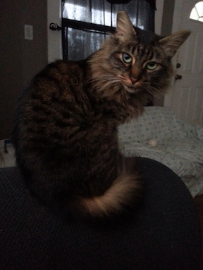
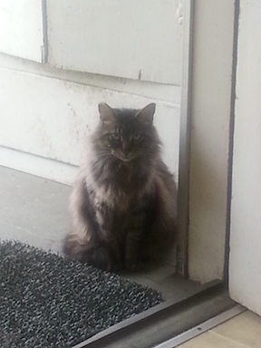
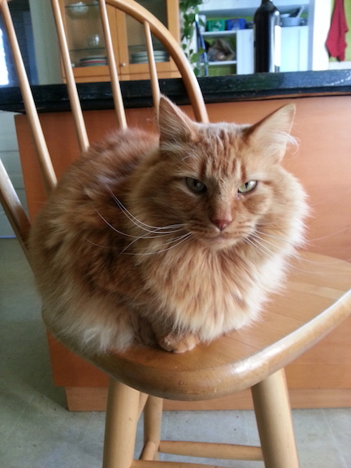
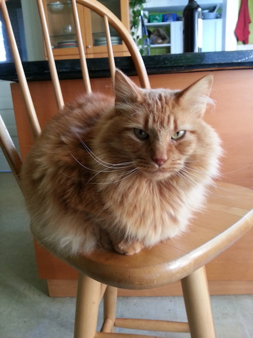

Pawline, my friend with a beautiful soul :)
Let me tell you a little bit about this wonderful creature!
Some of their qualites that I admire:
- They are independent!
- They clean themself really well
- They get free food everyday
- They live outside
Here are just a couple of pictures of Pawline in different places



Pawline has a friend in the neighborhood named Timmy, who is also feline!
Unlike Pawline, Timmy lives inside and loves to cuddle with human people... Check him out!
 

"The life of a cat isn't all cuddles and saucers of milk", says Pawline's arch enemy Friskers with an evil hiss!

But Pawline never let's Friskers get her down and always tries to help them whenever possible. Pawline knows that Friskers has some cuddles in their heart somewhere ;)

Thanks For Being a Great Friend Pawline!